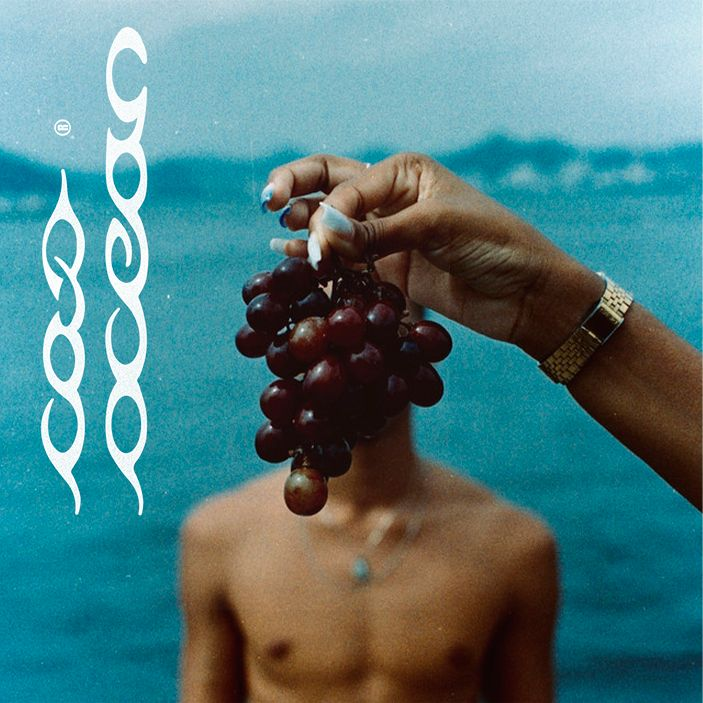

O que é Boombap?
O boombap é um dos subgêneros mais icônicos do hip-hop, surgido durante a era de ouro do rap, entre as décadas de 1980 e 1990. Seu nome é uma onomatopeia que descreve o som característico de sua batida: o "boom" representa o bumbo (kick drum) pesado e profundo, enquanto o "bap" refere-se ao estalo seco e marcante da caixa (snare drum). Essa combinação rítmica se tornou a assinatura do estilo, criando uma base crua e orgânica que serviu de alicerce para o hip-hop tradicional.
A essência do boombap está na sua produção, que frequentemente utiliza samples de vinis antigos de jazz, soul e funk, dando às músicas um clima nostálgico e ao mesmo tempo atemporal. Diferente de estilos mais modernos, o boombap prioriza a simplicidade e o minimalismo, com arranjos que destacam a bateria, os samples e a voz do MC. As letras costumam ser mais elaboradas e conscientes, abordando desde questões sociais e políticas até histórias de vida nas ruas, sempre com um flow técnico e cheio de personalidade.
Como reconhecer o Boombap?
Reconhecer o boombap é mais fácil quando se presta atenção em alguns elementos-chave. Em primeiro lugar, a batida é o maior indicativo: procure por um padrão rítmico que alterna entre um bumbo grave ("boom") e uma caixa afiada ("bap"), geralmente em um tempo mais lento e quebrado, com syncopes que dão um balanço único. A produção costuma ter um som mais "sujo" e analógico, com samples de instrumentos reais, como pianos, baixos acústicos e trechos de vinis antigos, em contraste com a sonoridade mais limpa e digital do hip-hop contemporâneo.
Outra característica marcante é o flow dos MCs, que tende a ser mais elaborado e ligeiramente acelerado, com rimas complexas e um tom muitas vezes agressivo ou introspectivo. As letras frequentemente trazem críticas sociais, reflexões pessoais ou narrativas sobre a vida urbana, mantendo um pé no ativismo e na poesia marginal. Além disso, o boombap tem uma atmosfera distinta, que remete às ruas de Nova York nos anos 90, com uma vibe underground e sem concessões ao comercial. Se você ouvir uma batida que parece ter saído direto de uma fita cassete, com um MC que domina a arte da rima com maestria, provavelmente está diante de um clássico do boombap.
Quem sao e foram os famosos do Boombap?
-
Racionais MC's - Os Pioneiros do Rap Consciente
Não tem como falar de boombap no Brasil sem citar Mano Brown, Ice Blue, Edi Rock e KL Jay. Desde os anos 1990, eles trouxeram batidas pesadas e letras que retratam a violência, o racismo e a desigualdade.
-
Álbuns essenciais: Sobrevivendo no Inferno (1997) e Nada Como um Dia Após o Outro (2002).
-
Músicas-chave: "Diário de um Detento", "Capítulo 4, Versículo 3", "Vida Loka Pt. 2".
-
-
Sabotage - O Legado do Crime e da Poesia
Um dos maiores MCs da história do rap brasileiro, Sabotage misturava boombap com um flow único e letras que falavam do crime, do arrependimento e da vida na quebrada. Sua morte precoce deixou um vazio, mas sua música continua influente.
-
Álbum essencial: Rap é Compromisso (2001).
-
Músicas-chave: "Respeito é Pra Quem Tem", "Mun-Rá", "Câncer".
-
-
Dexter - O Mestre das Rimas Complexas
Um dos MCs mais técnicos do Brasil, Dexter (do Clã Nordestino) trouxe um boombap com rimas elaboradas e flow afiado.
-
Álbuns essenciais: "Exilado Sim, Preso Não(2006)".
-
Músicas-chave: "Mile Dias", "Oitavo Anjo".
-
-
BK - Filosofia e Boombap Moderno
BK é um dos nomes mais inovadores do rap atual, misturando boombap com reflexões profundas sobre existência, sociedade e espiritualidade.
-
Músicas-chave: "Amanhecer", "Musica de Amor Nunca Mais".
-

Fora esses temos alguns artistas da nova geração que estão impressionando o publico com cada lançamento.
Djonga
PumaPJL
SonoTWS
Caio Ocean



Exitem milhares de outros artistas do genero que sao muito boms, porem falei apenas sobre os que tem maior repercursao entre os jovens.